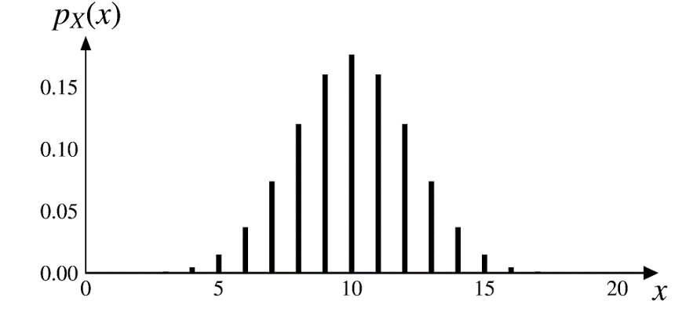
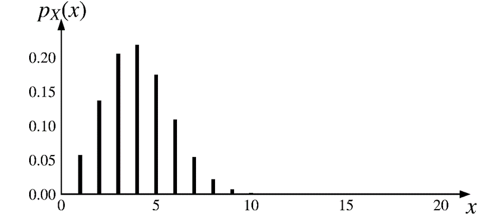
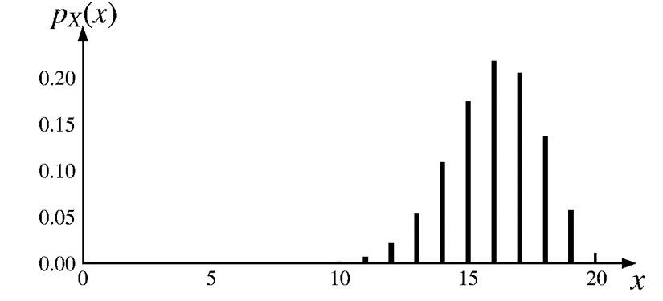
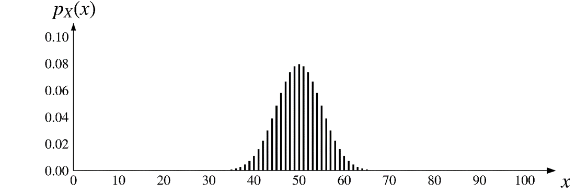
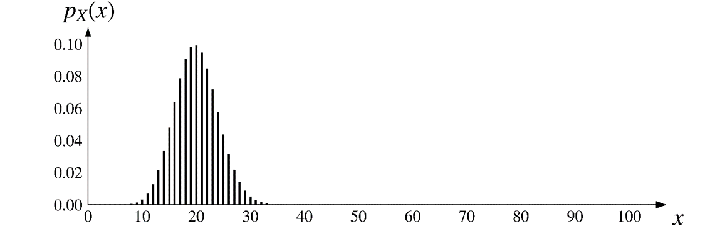
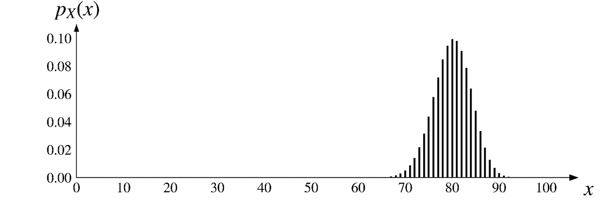

class: middle, center .huge[Binomial distribution] <br>  --- # [Binomial random variable](https://en.wikipedia.org/wiki/Binomial_distribution) Toss a coin for $n$ times. At each toss, - it lands on a heads  with probability of $p$ - it lands on a tails  with probability of $1-p$. -- $X$: the number of heads we get after $n$ tosses. We refer to $X$ as a binomial RV w/ parameters $n$ and $p$. -- Or simply $$X \sim \text{bin}(n, p)$$ --- Toss a coin for 3 times. What is the probability of getting 2 heads? -- <br> .left[] --- $$\text{P}(\text{2 heads in 3 tosses})=?$$ .center[] -- $$\text{P}(\text{2 heads in 3 tosses})={3 \choose 2}p^2(1-p)$$ --- # Probability mass function $X$: the number of heads we receive after $n$ tosses. $$X \sim \text{bin}(n, p)$$ PMF: -- .center[] -- $$p_X(k)=\text{P}(X=k) ={n \choose k}p^k(1-p)^{n-k}$$ $$\text{for } k=0, 1, 2, \cdots, n.$$ --- $$\text{P}(X=k) ={n \choose k}p^k(1-p)^{n-k}$$ $$\text{for } k=0, 1, 2, \cdots, n.$$ This is in the same format as the [binomial expansion](https://en.wikipedia.org/wiki/Binomial_theorem) in algebra, hence the name of the distribution. $$ (x+y)^n=\sum_{k=0}^n {n \choose k}x^k y^{n-k} $$ ${n \choose k}$ is often called the [binomial coefficient](https://en.wikipedia.org/wiki/Binomial_coefficient). --- # Exercise A family has 4 children. Each child has equal probability of being a girl or a boy, independent of the other children. Let $X$ be the number of girls in the family. Find the PMF of $X$. --- # Exercise You go to a party with $n$ other people. Let $X$ be the number of people who share the same birthday as you. Find the PMF of $X$. --- class: center $\text{bin}(\color{red}{20}, 0.5)$  -- $\text{bin}(\color{red}{100}, 0.5)$  --- class: center $\text{bin}(20, \color{red}{0.5})\;\;$ <p></p> -- $\text{bin}(20, \color{red}{0.2})\;\;$ <p></p> -- $\text{bin}(20, \color{red}{0.8})\;\;$ <p></p> --- class: center $\text{bin}(100, \color{red}{0.5})$ <p></p> -- $\text{bin}(100, \color{red}{0.2})$ <p></p> -- $\text{bin}(100, \color{red}{0.8})$ <p></p> --- class: center, middle .huge[[Interactive visualization](https://probstats.org/binomial.html)] --- For any PMF we have $$\small{\sum_x p_X(x)=1}$$ -- $$\small{\sum_{k=0}^n {n \choose k}p^k(1-p)^{n-k}=1}$$ -- When $p=1/2$ (i.e., a fair coin) -- $$\small{\sum_{k=0}^n {n \choose k}\bigg(\frac{1}{2}\bigg)^n=1}$$ -- $$\small{\sum_{k=0}^n {n \choose k}=2^n}$$ -- $$\small{1+n+\frac{n(n-1)}{2}+\cdots+\frac{n(n-1)}{2}+n+1=2^n}$$ ??? We will need this property later when finding the expected value of binomial RV. --- name: expected_binomial # Expected value of $X \sim \text{bin}(n, p)$ $$ \begin{aligned} p_X(k)&=\text{P}(X=k)={n \choose k}p^k(1-p)^{n-k} \\\ \\\ &\text{for } k=0, 1, 2, \cdots, n. \\\ \end{aligned} $$ -- <br> $$ \begin{aligned} \text{E}[X]&=\sum_{k=0}^n k \cdot {n \choose k}p^k(1-p)^{n-k} \\\ \\\ &=np \\\ \end{aligned} $$ [Proof](#appendix_A) --- # A shortcut to prove $\;\text{E}[X]=np$ Consider a Bernoulli RV $X$ $$ \small{ p_X(x) = \begin{cases} p, & \text{if $x = 1$,} \\\ 1-p, & \text{if $x = 0$.} \\\ \end{cases} } $$ .center[] A binomial RV is the sum of $n$ [independent & identically distributed (i.i.d.)](https://en.wikipedia.org/wiki/Independent_and_identically_distributed_random_variables) Bernoulli RVs. $$ Y=X_1+X_2+\cdots+X_n $$ --- # .red[Linearity] of the expected value For any given constants $a$ and $b$, we have $$ \text{E}[aX+b]=a \text{E}[X] + b $$ -- Given .red[any] two random variables $X$ and $Y$, we have $$\require{color}\colorbox{yellow}{$\text{E}[X+Y]=\text{E}[X] + \text{E}[Y]$}$$ Note it does not require $X$ and $Y$ to be independent. -- More generally, given .red[any] $n$ RVs $X_1, X_2, \cdots, X_n$ $$ \text{E}[X_1+X_2+\cdots+X_n] = \text{E}[X_1] + \text{E}[X_2]+\cdots+\text{E}[X_n] $$ --- # A shortcut to prove $\;\text{E}[X]=np$ $$ \begin{aligned} Y &\sim \text{bin}(n, p) \\\ \\\ X_i \text{'s are i.i.d.} &\sim \text{Bernoulli}(p) \\\ \\\ Y&=X_1+X_2+\cdots+X_n \\\ \\\ \text{E}[Y] &= \text{E}[X_1+X_2+\cdots+X_n] \\\ \\\ &=\text{E}[X_1] + \text{E}[X_2]+\cdots+\text{E}[X_n] \\\ \\\ &=p + p+\cdots+p \\\ \\\ &= np \end{aligned} $$ --- If two RVs $X$ and $Y$ are .red[independent], we have $$\require{color}\colorbox{yellow}{$\text{var}(X+Y)=\text{var}(X) + \text{var}(Y)$}$$ -- More generally, if $n$ RVs $X_1, X_2, \cdots, X_n$ are independent, $$ \begin{aligned} &\text{var}(X_1+X_2+\cdots+X_n) \\\ \\\ =\;&\text{var}(X_1) + \text{var}(X_2)+\cdots+\text{var}(X_n) \\\ \end{aligned} $$ --- $$ \begin{aligned} Y &\sim \text{bin}(n, p) \\\ \\\ X_i \text{'s are i.i.d.} &\sim \text{Bernoulli}(p) \\\ \\\ Y&=X_1+X_2+\cdots+X_n \\\ \\\ \text{var}(Y) &= \text{var}(X_1+X_2+\cdots+X_n) \\\ \\\ &=\text{var}(X_1) + \text{var}(X_2)+\cdots+\text{var}(X_n) \\\ \\\ &=p(1-p) + p(1-p)+\cdots+p(1-p) \\\ \\\ &= np(1-p) \end{aligned} $$ --- # [Galton Board](https://en.wikipedia.org/wiki/Bean_machine) .center[] --- class: center # Galton Board demo <iframe width="750" height="480" src="https://www.youtube.com/embed/gVwThfp_OUU" frameborder="0" allow="accelerometer; clipboard-write; encrypted-media; gyroscope; picture-in-picture" allowfullscreen></iframe> --- name: appendix_A Appendix A ([Go back](#expected_binomial)) $$ \small{ \begin{aligned} \text{E}[X]&=\sum_{k=0}^n k {n \choose k}p^k(1-p)^{n-k} \\\ \\\ &=0 {n \choose 0}p^0(1-p)^{n-0} + \sum_{k=1}^n k {n \choose k}p^k(1-p)^{n-k} \\\ \\\ &=\sum_{k=1}^n k \frac{n!}{k!(n-k)!} p^k(1-p)^{n-k} \\\ \\\ &=\sum_{k=1}^n k \frac{n \cdot (n-1)!}{k\cdot(k-1)!(n-k)!} p\cdot p^{k-1}(1-p)^{n-k} \\\ \\\ &=np\sum_{k=1}^n \frac{(n-1)!}{(k-1)!(n-k)!} p^{k-1}(1-p)^{n-k} \\\ \end{aligned} } $$ --- Appendix A (cont'd) <br> $$ \small{ \begin{aligned} &=np\sum_{k=1}^n \frac{(n-1)!}{(k-1)!(n-k)!} p^{k-1}(1-p)^{n-k} \\\ \\\ & \text{In the summation, let $k'=k-1$ and $n'=n-1$} \\\ &=np\sum_{k'=0}^{n'} \frac{n'!}{k'!(n'-k')!} p^{k'}(1-p)^{n'-k'} \\\ \\\ &=np \cdot 1 \;\;\;\color{gray}{\text{(Note inside the sigma it's the PMF of bin($n', p$))}} \\\ \\\ &=np \\\ \end{aligned} } $$